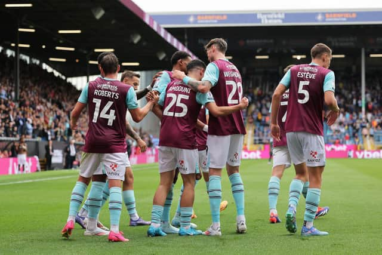

Moran and Manning called up by Republic of Ireland

Stoke's Andrew Moran and Southampton's Ryan Manning have been called up to the Republic of Ireland squad for the Uefa Nations League play-off against Bulgaria after Will Smallbone and Callum O'Dowda were ruled out. Read More
Record-breaking weekend for men’s A-League as 33 goals scored

The latest round of men’s A-League football has produced an all-time record 33 goals from six matches. The tally smashes the previous record of 30 goals set in Round 26 during the 2023-24 season. The A-Leagues have produced this 31-minute package of all the goals scored in the 23rd round of the Isuzu UTE A-League, played over the weekend of March 14-16, 2025. Read More
Breaking news: Burnley concede a goal after 1,132 minutes of football
When Burnley conceded an 80th-minute consolation goal in their final game before Christmas last year, their fans could scarcely have imagined they would go on to play 12 consecutive games in the Championship without letting in another.